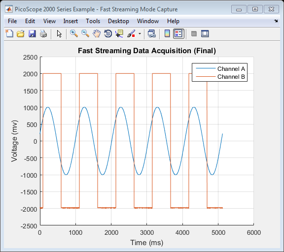

PicoScope 2000 Series Instrument Driver Oscilloscope Fast Streaming Live Data Capture Example
This is an example of an instrument control session using a device object. The instrument control session comprises all the steps you are likely to take when communicating with your instrument.
These steps are:
- Create a device object
- Connect to the instrument
- Configure properties
- Invoke functions
- Disconnect from the instrument
To run the instrument control session, type the name of the file, PS2000_ID_FastStreaming_Live_Example, at the MATLAB command prompt.
The file, PS2000_ID_FASTSTREAMING_LIVE_EXAMPLE.M must be on your MATLAB PATH. For additional information on setting your MATLAB PATH, type 'help addpath' at the MATLAB command prompt.
Example: PS2000_ID_FastStreaming_Live_Example;
Description: Demonstrates how to set properties and call functions in order to capture fast streaming mode data from a PicoScope 2000 Series Oscilloscope. Data collection will stop when the requested number of samples have been collected. Optionally, data may be plotted as it is collected.
Note: Not all device and group object functions used in this example are compatible with the Test and Measurement Tool.
Copyright: © 2013 - 2016 Pico Technology Ltd. All rights reserved.
Contents
Suggested Input Test Signals
This example was published using the following test signals:
- Channel A: 2Vpp, 1Hz sine wave
- Channel B: 4Vpp, 1Hz square wave
Clear Command Window and Close any Figures
clc;
close all;
Load Configuration Information
PS2000Config;
Parameter Definitions
Define any additional parameters that will be used throughout the script.
channelA = ps2000Enuminfo.enPS2000Channel.PS2000_CHANNEL_A; channelB = ps2000Enuminfo.enPS2000Channel.PS2000_CHANNEL_B;
Device Connection
% Create a device object. ps2000DeviceObj = icdevice('picotech_ps2000_generic.mdd'); % Connect device object to hardware. connect(ps2000DeviceObj);
Copyright © 2013 - 2016 Pico Technology Ltd. All rights reserved.
PicoScope 2000 Series MATLAB Instrument Driver
Opening PicoScope 2000 Series device...
Instrument Device Object Using Driver : picotech_ps2000_generic.mdd
Instrument Information
Type: Oscilloscope
Manufacturer: Pico Technology Ltd.
Model: PicoScope 2000 Series
Driver Information
DriverType: MATLAB generic
DriverName: picotech_ps2000_generic.mdd
DriverVersion: 1.1.19
Communication State
Status: open
Setting Device Parameters...
Default Channel Setup:-
Channel A:-
Enabled: True
Coupling: DC
Range: 5V
Channel B:-
Enabled: True
Coupling: DC
Range: 5V
Turning off Equivalent Time Sampling...
ps2000SetEts: ETS switched off.
Turning off trigger...
Default data collection parameters:-
Number of samples: 1024
Block sampling interval: 0.66 ms
Oversampling factor: 1
Default Streaming mode parameters:-
Sampling interval: 0.001 ms
Overview buffer size: 15000 samples
Streaming auto stop: 1
Default Signal generator parameters:-
Start frequency: 1000 Hz
Stop frequency: 1000 Hz
Offset voltage: 0 mV
Peak to Peak voltage: 2000 mV
Initialisation complete.
Connected to PicoScope 2000 Series device:-
Instrument Model: 2205A
Batch/Serial Number: GRA01/002
Number of Channels: 2
Buffer memory: 16384 samples
Maximum sampling rate: 200 MS/s
Signal Generator Type: Arbitrary Waveform Generator
Obtain Device Groups
Obtain references to device groups to access their respective properties and functions.
% Block specific properties and functions are located in the Instrument % Driver's Block group. blockGroupObj = get(ps2000DeviceObj, 'Block'); blockGroupObj = blockGroupObj(1); % Streaming specific properties and functions are located in the Instrument % Driver's Streaming group. streamingGroupObj = get(ps2000DeviceObj, 'Streaming'); streamingGroupObj = streamingGroupObj(1); % Trigger specific properties and functions are located in the Instrument % Driver's Trigger group. triggerGroupObj = get(ps2000DeviceObj, 'Trigger'); triggerGroupObj = triggerGroupObj(1);
Configure Device
Enable Channels A and B, set the sampling interval and the number of samples to collect.
Set channels - channel information is loaded from the PS2000Config file:
% Channel : 0 (ps2000Enuminfo.enPS2000Channel.PS2000_CHANNEL_A) % Enabled : 1 (PicoConstants.TRUE) % DC : 1 (DC Coupling) % Range : 6 (ps2000Enuminfo.enPS2000Range.PS2000_1V) [status.setChA] = invoke(ps2000DeviceObj, 'ps2000SetChannel', channelA, ... ps2000ConfigInfo.channelSettings.channelA.enabled, ps2000ConfigInfo.channelSettings.channelA.dc, ... ps2000ConfigInfo.channelSettings.channelA.range); % Obtain the voltage range for the channel (in millivolts). chARangeMv = PicoConstants.SCOPE_INPUT_RANGES(ps2000ConfigInfo.channelSettings.channelA.range + 1); % Channel : 1 (ps2000Enuminfo.enPS2000Channel.PS2000_CHANNEL_B) % Enabled : 1 (PicoConstants.TRUE) % DC : 1 (DC Coupling) % Range : 7 (ps2000Enuminfo.enPS2000Range.PS2000_2V) [status.setChB] = invoke(ps2000DeviceObj, 'ps2000SetChannel', channelB, ... ps2000ConfigInfo.channelSettings.channelB.enabled, ps2000ConfigInfo.channelSettings.channelB.dc, ... ps2000ConfigInfo.channelSettings.channelB.range); % Obtain the voltage range for the channel (in millivolts). chBRangeMv = PicoConstants.SCOPE_INPUT_RANGES(ps2000ConfigInfo.channelSettings.channelB.range + 1); % Find the maximum ADC Count from the driver. maxADCCount = get(ps2000DeviceObj, 'maxADCValue');
Set sampling interval and number of samples to collect:
% Set sampling interval. The driver will calculate the nearest sampling % interval that is relatively shorter if an exact match cannot be found. % Sampling rates faster than 1MS/s are not recommended as these are low % memory devices. % To set a new sampling interval e.g. 10 microseconds (100kS/s), first find % the closest sampling interval to 10 microseconds. [samplingIntervalMs, maxBlockSamples] = invoke(blockGroupObj, 'setBlockIntervalMs', 10e-3); % Next, set the actual sampling interval. set(streamingGroupObj, 'streamingIntervalMs', samplingIntervalMs); fprintf('Actual sampling interval: %.6f ms.\n', samplingIntervalMs); % Collect 1 million samples from the driver numStreamingSamples = 1000000; set(ps2000DeviceObj, 'numberOfSamples', numStreamingSamples); % Set the size of the overview buffer used for streaming capture. % This is the size of the internal buffer for each channel and should be % large enough to accomodate the data that is collected in the time it % takes to execute an iteration of the loop below. set(streamingGroupObj, 'overviewBufferSize', 100000);
Actual sampling interval: 0.005120 ms.
Trigger setup:
% Turn trigger off. [status.setTriggerOff] = invoke(triggerGroupObj, 'setTriggerOff');
Set Application Buffers
The data for each channel will be collected into a corresponding application buffer.
Ensure application buffers are large enough to accomodate pre- and post-trigger samples, as Data collection will stop if the application buffer becomes full.
If capturing data without using the autoStop flag, or if using a trigger with the autoStop flag, allocate sufficient space (1.5 times the sum of the number of pre-trigger and post-trigger samples is shown below) to allow for additional pre-trigger data. Pre-allocating the array is more efficient than using vertcat to combine data.
The maximum array size will depend on PC's resources - type memory at the MATLAB command prompt for further information.
appBufferSize = numStreamingSamples * 1.5; pAppBufferChA = libpointer('int16Ptr', zeros(appBufferSize, 1, 'int16')); pAppBufferChB = libpointer('int16Ptr', zeros(appBufferSize, 1, 'int16')); % Set the application buffers in the underlying wrapper library. invoke(streamingGroupObj, 'setBuffer', channelA, pAppBufferChA, appBufferSize); invoke(streamingGroupObj, 'setBuffer', channelB, pAppBufferChB, appBufferSize);
Fast Streaming Data Collection
Collect data in fast streaming mode. As no trigger is set, but the auto stop feature is used, data collection will stop when the number of specified samples has been collected. Data will be plotted as it is collected if the User chooses to do so when prompted.
Note: When plotting live data, there may be small amounts of 'missing' data. This is likely to be due to the wrapper/driver interaction and how the streaming data collection works. The data should be present when it is displayed in the final (second) plot.
% Prompt User to indicate if they wish to plot live streaming data. plotLiveData = questionDialog('Plot live streaming data?', 'Streaming Data Plot'); if(plotLiveData == PicoConstants.TRUE) disp('Live streaming data collection with second plot on completion.'); else disp('Streaming data plot on completion.'); end % Set aggregation ratio to 1 numSamplesPerAggregate = 1; % Start the device collecting data. [status.runStreamingNs] = invoke(streamingGroupObj, 'ps2000RunStreamingNs', numSamplesPerAggregate); disp('Collecting fast streaming data...'); fprintf('Click the STOP button to stop capture or wait for auto stop if enabled.\n\n') % Variables to be used when collecting the data hasAutoStopped = PicoConstants.FALSE; isAppBufferFull = PicoConstants.FALSE; totalSamples = 0; previousTotal = 0; % Keep track of previous total. hasTriggered = 0; % To indicate if trigger has occurred. triggeredAtIndex = 0; % The index in the overall buffer where the trigger occurred. % Stop button to check abort data collection. [stopFig.h, stopFig.h] = stopButton(); flag = 1; % Use flag variable to indicate if stop button has been clicked (0) setappdata(gcf, 'run', flag); % Plot Properties - these are for displaying data as it is collected. if(plotLiveData == PicoConstants.TRUE) % Plot on a single figure figure1 = figure('Name','PicoScope 2000 Series Example - Fast Streaming Mode Capture', ... 'NumberTitle','off'); axes1 = axes('Parent', figure1); % Estimate x-axis limit to try and avoid using too much CPU resources % when drawing - use max voltage range selected if plotting multiple % channels on the same graph. xlim(axes1, [0 (samplingIntervalMs * numStreamingSamples)]); yRange = max(chARangeMv, chBRangeMv) + 500; ylim(axes1,[(-1 * yRange) yRange]); hold(axes1,'on'); grid(axes1, 'on'); title(axes1, 'Live Fast Streaming Data Acquisition'); xLabelStr = 'Time (ms)'; xlabel(axes1, xLabelStr); ylabel(axes1, 'Voltage (mV)'); end % Collect samples as long as the autoStop flag has not been set, the or the call % to getStreamingLatestValues does not return an error code (check for STOP % button push inside loop). while(hasAutoStopped == PicoConstants.FALSE && isAppBufferFull == PicoConstants.FALSE) ready = 0; % Poll the device while(ready == PicoConstants.FALSE) invoke(streamingGroupObj, 'pollFastStreaming'); ready = invoke(streamingGroupObj, 'isFastStreamingReady'); % Give option to abort data collection from here. flag = getappdata(gcf, 'run'); drawnow; if(flag == 0) disp('STOP button clicked - aborting data collection.') break; end if(plotLiveData == PicoConstants.TRUE) drawnow; end end % Retrieve fast streaming information. [totalValues, overflow, triggeredAt, hasTriggered, hasAutoStopped, ... isAppBufferFull, startIndex] = invoke(streamingGroupObj, 'getFastStreamingDetails'); if(previousTotal ~= totalValues) % Outputting to command line window may hinder performance. %fprintf('Num values: %d Total - %d\n', previousTotal, totalSamples); if(hasTriggered) % Offset by 1 as MATLAB does not use zero based indexing. triggeredAtIndex = previousTotal + triggeredAt + 1; end % Position indices of data in the buffer(s). firstValuePosn = startIndex + 1; % Convert data values to millivolts from the application buffer(s). bufferChAmV = adc2mv(pAppBufferChA.Value(firstValuePosn:totalValues), chARangeMv, maxADCCount); bufferChBmV = adc2mv(pAppBufferChB.Value(firstValuePosn:totalValues), chBRangeMv, maxADCCount); if(plotLiveData == PicoConstants.TRUE) % Time axis. % Multiply by ratio mode as samples get reduced. time = (double(samplingIntervalMs) * double(numSamplesPerAggregate)) * (startIndex:(totalValues - 1)); plot(axes1, time, bufferChAmV, time, bufferChBmV); end previousTotal = totalValues - totalSamples; % Calculate previous total. totalSamples = totalValues; end % Check if auto stop has occurred. if(hasAutoStopped) disp('AutoStop: TRUE - exiting loop.'); break; end % Check if the application buffer is full. if(isAppBufferFull) disp('Application buffer(s) full - exiting loop.'); break; end % Check if 'STOP' button has been pressed. flag = getappdata(gcf, 'run'); drawnow; if(flag == 0) disp('STOP button clicked - aborting data collection.'); break; end end disp('Data collection complete.'); % Close the STOP button window if(exist('stopFig', 'var')) close('Stop Button'); clear stopFig; end if(plotLiveData == PicoConstants.TRUE) drawnow; % Take hold off the current figure hold(axes1,'off'); end if(hasTriggered == PicoConstants.TRUE) fprintf('Triggered at overall index: %d\n\n', triggeredAtIndex); end % Clear parameters held in the wrapper library if another data capture run % is to take place. invoke(streamingGroupObj, 'clearFastStreamingParameters');
Streaming data plot on completion. Collecting fast streaming data... Click the STOP button to stop capture or wait for auto stop if enabled. AutoStop: TRUE - exiting loop. Data collection complete.
Stop the Device.
This function should be called regardless of whether the autoStop property is enabled or not.
[status.stop] = invoke(ps2000DeviceObj, 'ps2000Stop');
Process Data
Process data if required - here the data will be plotted again.
disp('Processing data for plot...') maxADCValue = get(ps2000DeviceObj, 'maxADCValue'); % Change length of buffers if number of samples is less than application % buffer. if(totalValues < appBufferSize) pAppBufferChA.Value(totalValues + 1:end) = []; pAppBufferChB.Value(totalValues + 1:end) = []; end % Retrieve data and convert to milliVolts bufferChA = adc2mv(pAppBufferChA.Value, chARangeMv, maxADCValue); bufferChB = adc2mv(pAppBufferChB.Value, chBRangeMv, maxADCValue); % Plot data finalFigure = figure('Name','PicoScope 2000 Series Example - Fast Streaming Mode Capture', ... 'NumberTitle','off'); finalFigureAxes = axes('Parent', finalFigure); hold(finalFigureAxes, 'on'); % Find the maximum voltage range and add 500mV. maxYRange = max(chARangeMv, chBRangeMv) + 500; ylim(finalFigureAxes, [(-1 * maxYRange) maxYRange]); % Calculate time axis in milliseconds, then plot data. timeLabel = 'Time (ms)'; time = (0:1:(length(bufferChA)) - 1) * double(samplingIntervalMs) * double(numSamplesPerAggregate); plot(time, bufferChA, time, bufferChB); title(finalFigureAxes, 'Fast Streaming Data Acquisition (Final)'); xlabel(timeLabel); ylabel('Voltage (mv)'); grid(finalFigureAxes, 'on'); legend(finalFigureAxes, 'Channel A', 'Channel B'); hold(finalFigureAxes, 'off');
Processing data for plot...
Disconnect
Disconnect device object from hardware.
disconnect(ps2000DeviceObj); delete(ps2000DeviceObj);
Connection to PicoScope 2205A with serial number GRA01/002 closed successfully. Libraries unloaded successfully.